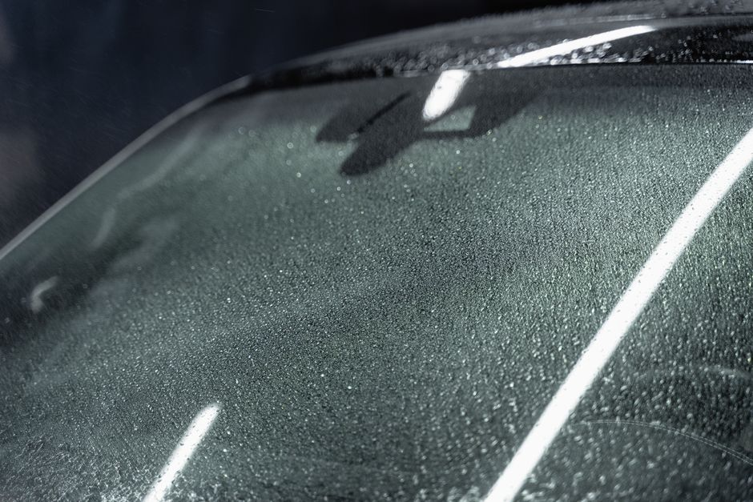
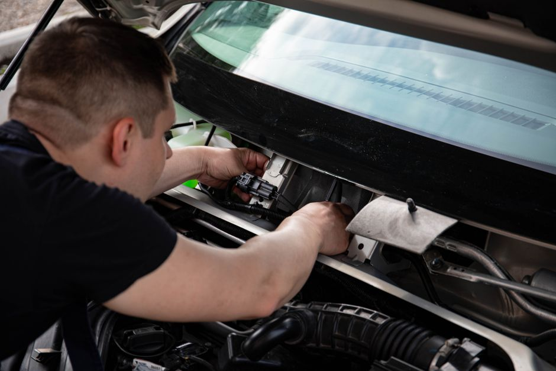
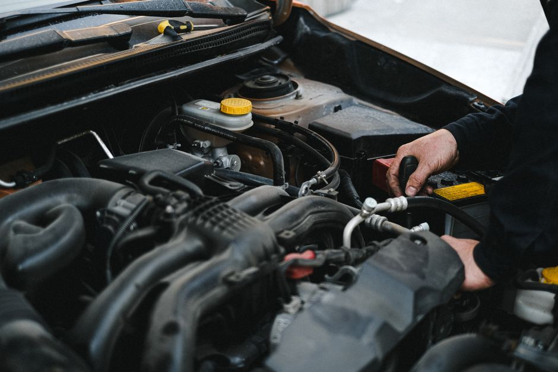

Restore Your View: Professional Auto Glass Solutions
Bearish Mindx connects you with Austin's premier experts to ensure your vehicle is safe and your vision is crystal clear. Don't let a cracked windshield compromise your journey.

Comprehensive Auto Glass Services
We partner with top-rated technicians to provide fast, reliable, and precise solutions for all your vehicle's glass needs.
Windshield Replacement
When damage is too extensive for a simple fix, a full windshield replacement is necessary. We ensure high-quality auto glass is installed with precision, restoring your vehicle's structural integrity and your peace of mind on the road.
Expert Chip Repair
Don't let a small rock chip turn into a massive crack. Our windshield repair services address minor blemishes quickly, preventing further spreading and saving you the significant cost of a complete replacement.
Car Window Replacement
Broken side or rear windows leave your vehicle vulnerable to harsh weather and theft. We provide swift car window replacement services, matching the exact specifications of your vehicle's original glass for a perfect fit.
Our Mission
At Bearish Mindx, we understand that a damaged windshield is more than just a nuisance—it is a critical safety hazard. We partner with Austin Windshields to bring you top-tier auto glass and windshield replacement services right when you need them.
Whether you require a quick chip repair before a long trip or a comprehensive car window replacement after an unexpected break-in, our focus is entirely on connecting you with certified technicians. We aim to get you back on the road safely, efficiently, and with total clarity.

Frequently Asked Questions

How long does a windshield replacement take?
Typically, a full windshield replacement takes about one to two hours. This includes the time needed for the new auto glass to be properly seated and for the specialized adhesives to set so you can drive away safely.
Can you perform a chip repair on any crack?
Windshield repair is usually highly effective for minor chip damage smaller than a quarter. However, if the crack is significantly larger, located directly in the driver's line of sight, or reaches the edge of the glass, a complete windshield replacement is required for safety.
Do you offer mobile auto glass services?
Yes, we understand that driving with heavily damaged glass can be dangerous. Many of our local partners can dispatch technicians directly to your home or workplace for convenient car window replacement or repair.
Is my car window replacement covered by insurance?
In many instances, comprehensive auto insurance policies cover both windshield repair and replacement. We recommend verifying coverage with your insurance provider, and our local partners can frequently assist you with navigating the insurance claims process.
How soon can I wash my car after auto glass installation?
You should wait a minimum of 24 hours before washing your vehicle after any windshield replacement. High-pressure car washes can disrupt the seals before they have cured completely, potentially compromising the integrity of your new auto glass.
Client Experiences
"The windshield replacement was incredibly fast and professional. Bearish Mindx helped me find the right service immediately when my windshield cracked on the highway."
— Sarah T., 2026
"I needed a quick chip repair before a long road trip. The process was completely seamless, and the auto glass looks as good as new. Highly recommended."
— Mark D., 2026
"Someone broke my passenger window overnight. The car window replacement was handled with utmost care and speed. Great connection service."
— Jessica L., 2026

Request Auto Glass Service
Fill out the form to connect with local professionals for your windshield replacement or repair needs. A certified technician will review your request and get back to you promptly.
